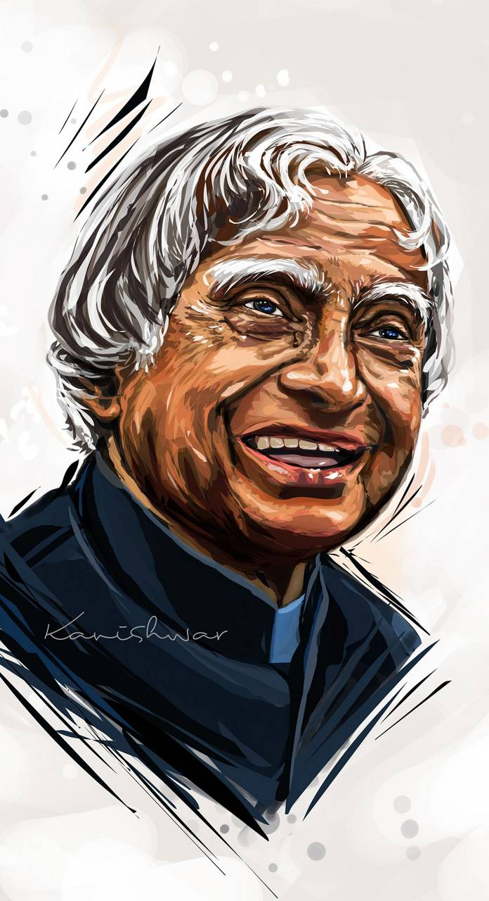

“Don't take rest after your first victory because if you fail in second, more lips are waiting to say that your first victory was just luck.”
Know the 10 big achievements of India's 'Missile Man'
Dr APJ Abdul Kalam headed multiple nuclear tests at Pokhran. As the Chief Scientific Adviser to the then Prime Minister, Dr Kalam played a major role in heading the Pokhran-II Pokhran-II nuclear tests
The nuclear tests under the supervision of Dr Kalam, during July 1992 to December 1999 , made India a nuclear power.
Dr APJ Abdul Kalam led India's two major science research organisations - Defence Research and Development Organisation (DRDO) and Indian Space Research Organisation (ISRO )
Dr Kalam is credited with pioneering work in the development and operationalization of 'Indigenous Guided Missiles' - AGNI and PRITHVI
For his work on AGNI and PRITHVI, Dr APJ Abdul Kalam was fondly called the 'Missile Man of India'.
Dr Kalam led the project to develop India's first Satellite Launch Vehicle (SLV)
Dr Kalam worked for over 10 years as the project director for the development of the indigenous Satellite Launch Vehicle at ISRO
In July 1980, under the guidance of Dr APJ Abdul Kalam, India's SLV-III successfully deployed the Rohini satellite in the near-Earth orbit, making India a member of the exclusive space club
Dr Kalam directed projects for the development of India's ballistic missiles. He headed the projects Devil and Valiant, for the development of ballistic missiles using the technology behind the successful SLV programme.
APJ Abdul Kalam made huge contributions to the healthcare sector. He worked hard for making healthcare accessible to all. Dr Kalam worked with cardiologist Soma Raju, and developed a low cost coronary stent the 'Kalam-Raju Stent'
Dr Kalam died on July 27, 2015, while delivering a lecture at the Indian Institute of Management in Shillong.